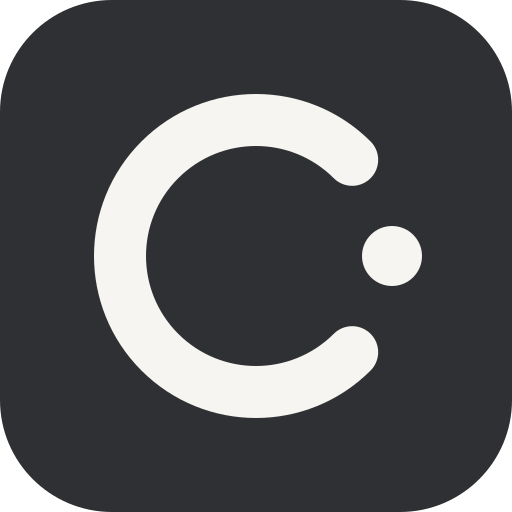
cadence-icon-dark
Use the current Cadence identity. Keep the C and rhythm dot together.
Download cadence-icon-dark SVGCADENCE / VISUAL LIBRARY / 02
A quiet journal for work, study and everyday plans. Browse the original C mark, consistent lines and warm paper surfaces. Artwork is prepared for the product direction; it does not mean a feature is implemented.
#7C394BPaper #F6F5F1Sage #6F877CInk #2F3033
Use the current Cadence identity. Keep the C and rhythm dot together.
Download cadence-icon-dark SVGUse the current Cadence identity. Keep the C and rhythm dot together.
Download cadence-icon-paper SVGUse the current Cadence identity. Keep the C and rhythm dot together.
Download cadence-icon-v2 SVGUse the current Cadence identity. Keep the C and rhythm dot together.
Download cadence-lockup SVGUse the current Cadence identity. Keep the C and rhythm dot together.
Download cadence-mark-ink SVG
Use the current Cadence identity. Keep the C and rhythm dot together.
Download cadence-mark-wine SVGPrepared symbols for optional course tools. These do not define the core planner.
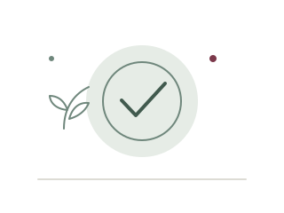
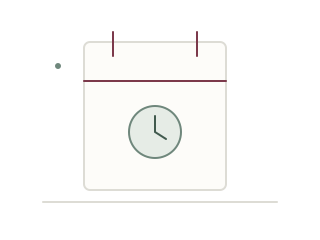
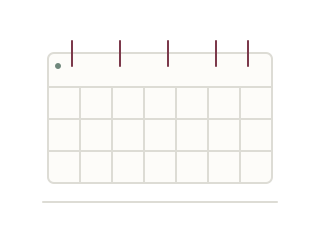
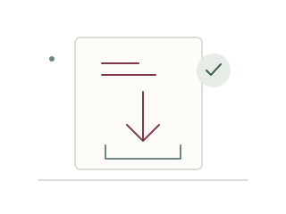
Review a draft import. Nothing has been accepted or saved yet.
Download import-preview SVG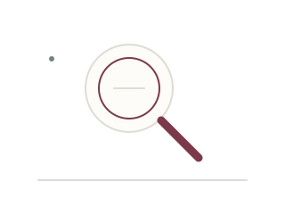
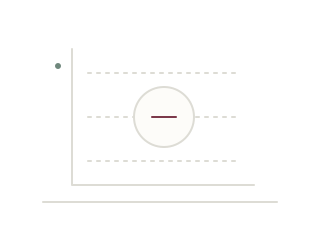
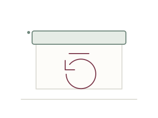
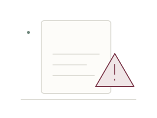
Repeat as faint decoration. Keep forms and text on plain surfaces.
Download journal-dots SVGRepeat as faint decoration. Keep forms and text on plain surfaces.
Download journal-grid SVGRepeat as faint decoration. Keep forms and text on plain surfaces.
Download journal-rules SVG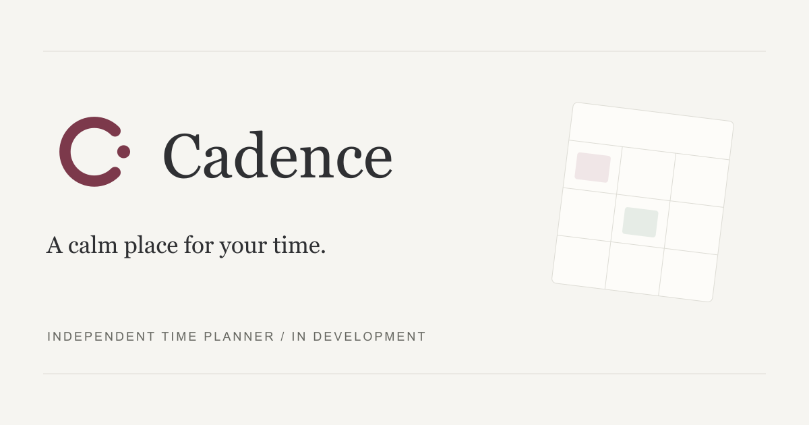
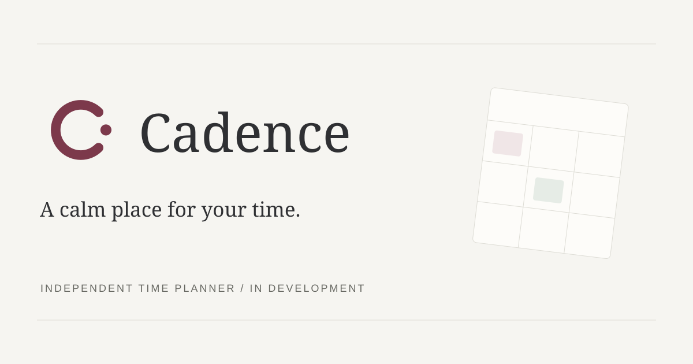

Decorative still life. Original image; not an application screenshot.
Download journal-editorial PNGLauncher or browser export. Native package acceptance is a separate check.
Download cadence-16 PNGLauncher or browser export. Native package acceptance is a separate check.
Download cadence-24 PNGLauncher or browser export. Native package acceptance is a separate check.
Download cadence-32 PNGLauncher or browser export. Native package acceptance is a separate check.
Download cadence-48 PNGLauncher or browser export. Native package acceptance is a separate check.
Download cadence-64 PNGLauncher or browser export. Native package acceptance is a separate check.
Download cadence-128 PNGLauncher or browser export. Native package acceptance is a separate check.
Download cadence-180 PNGLauncher or browser export. Native package acceptance is a separate check.
Download cadence-192 PNG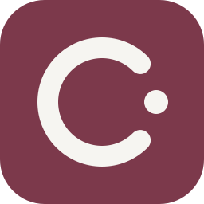
Launcher or browser export. Native package acceptance is a separate check.
Download cadence-256 PNG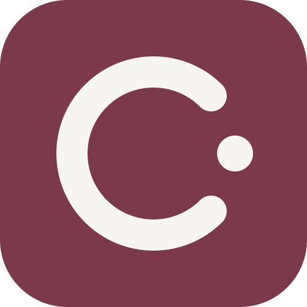
Launcher or browser export. Native package acceptance is a separate check.
Download cadence-512 PNG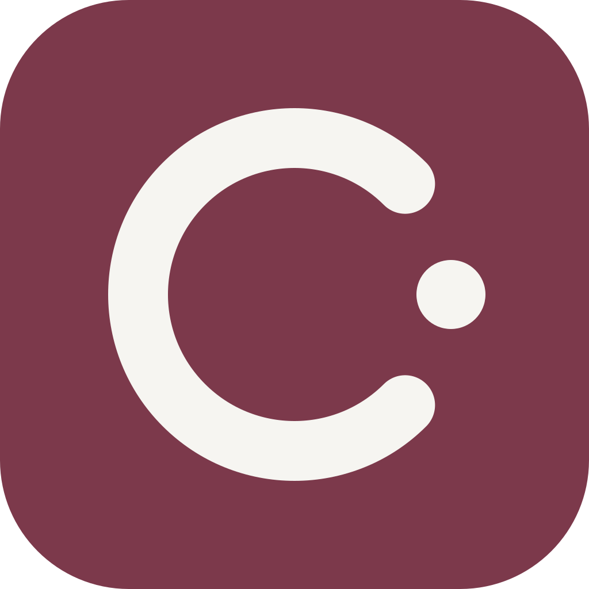
Launcher or browser export. Native package acceptance is a separate check.
Download cadence-1024 PNGLauncher or browser export. Native package acceptance is a separate check.
Download cadence ICNSLauncher or browser export. Native package acceptance is a separate check.
Download cadence ICONo artwork matches. Try another name or reset the filters.